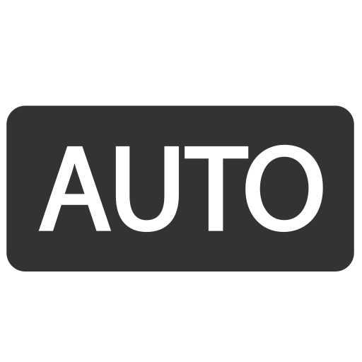

Describe (however detailed you want) your intended shot, camera, and constraints. Autofocus will provide recommended settings for your situation. Your camera's automatic

mode will often give you a decent shot, but Autofocus attempts to take into account your environment and photography situation. It tailors settings based on subject behavior, surrounding lighting characteristics, camera and lens type, and limitations. Save your settings if you like them, and come back to them again and again. Autofocus is not truth serum, but it is a useful guide to help you achieve a high level starting point for whatever situation you may be in with your camera.
ExplanationWaiting for your scene...
Tip: you can be as high- or low-level as you like: "Astro Milky Way on APS-C", "Concert from back row", "iPhone night street portrait", etc.